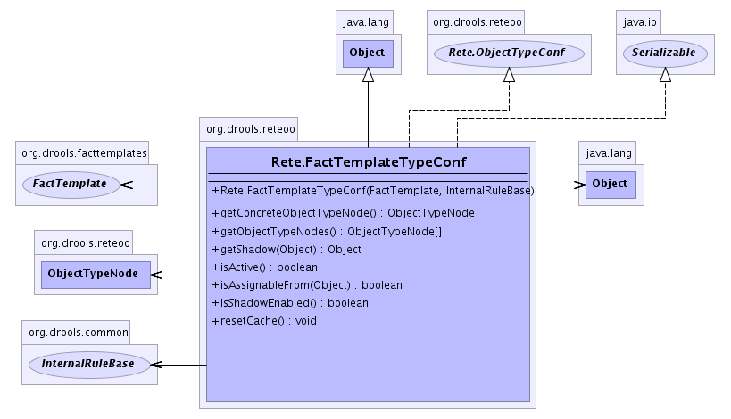

org.drools.reteoo
Class Rete.FactTemplateTypeConf
java.lang.Object
 org.drools.reteoo.Rete.FactTemplateTypeConf
org.drools.reteoo.Rete.FactTemplateTypeConf
- All Implemented Interfaces:
- java.io.Serializable, Rete.ObjectTypeConf
- Enclosing class:
- Rete
public static class Rete.FactTemplateTypeConf
- extends java.lang.Object
- implements Rete.ObjectTypeConf, java.io.Serializable
- See Also:
- Serialized Form
-
- 
| Methods inherited from class java.lang.Object |
clone, equals, finalize, getClass, hashCode, notify, notifyAll, toString, wait, wait, wait |
Rete.FactTemplateTypeConf
public Rete.FactTemplateTypeConf(FactTemplate factTemplate,
InternalRuleBase ruleBase)
getConcreteObjectTypeNode
public ObjectTypeNode getConcreteObjectTypeNode()
- Specified by:
getConcreteObjectTypeNode in interface Rete.ObjectTypeConf
getObjectTypeNodes
public ObjectTypeNode[] getObjectTypeNodes()
- Specified by:
getObjectTypeNodes in interface Rete.ObjectTypeConf
getShadow
public java.lang.Object getShadow(java.lang.Object fact)
throws RuntimeDroolsException
- Specified by:
getShadow in interface Rete.ObjectTypeConf
- Throws:
RuntimeDroolsException
isShadowEnabled
public boolean isShadowEnabled()
- Specified by:
isShadowEnabled in interface Rete.ObjectTypeConf
isAssignableFrom
public boolean isAssignableFrom(java.lang.Object object)
- Specified by:
isAssignableFrom in interface Rete.ObjectTypeConf
resetCache
public void resetCache()
- Specified by:
resetCache in interface Rete.ObjectTypeConf
isActive
public boolean isActive()
- Specified by:
isActive in interface Rete.ObjectTypeConf